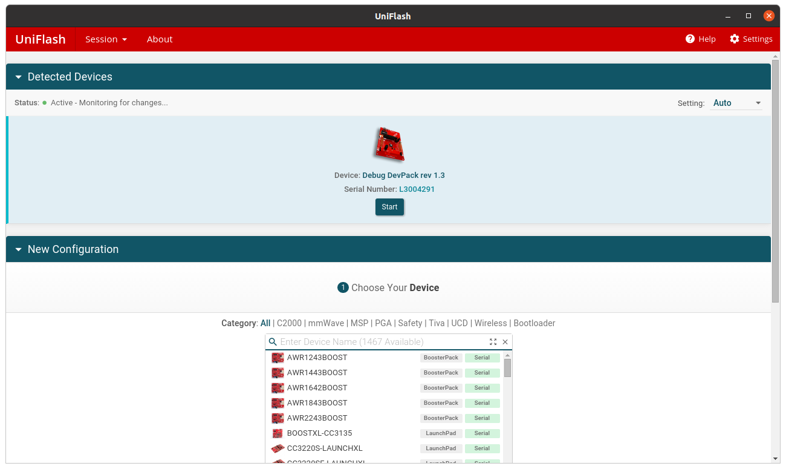

Práctica 6. 6LowPAN (SensorTag)
Objetivos
El objetivo principal de la presente práctica es reproducir (y ampliar) el entorno simulado visto en la práctica anterior, pero en este caso utilizando hardware real. Para ello, ampliaremos el entorno para desplegar un router de borde físico en el laboratorio, que enrutará los mensajes con origen la red RPL hacia un servidor UDP físico situado en la red externa.
Tras el despliegue, cada Sensortag que forme parte de la red RPL enviará, periódicamente, mensajes UDP con un formato preestablecido, que serán mostrados por pantalla en el servidor UDP desplegado en el PC del profesor.
Despliegue y modificación de un cliente UDP en el SensorTag
Para la realización de la práctica, partiremos del ejemplo de cliente UDP situado en
el directorio examples/ipv6/rpl-udp/udp-client.c. Este sencillo código realiza un
envío periódico de un paquete UDP (en su versión original, una cadena de caracteres
conteniendo el mensaje Hello XX from the client (siendo XX un número de secuencia
ascendente), a un servidor a la escucha en el puerto 5678 de una dirección IP determinada.
Estudia el código del cliente UDP, concretamente centrándote en las siguientes partes:
- Temporización del envío (línea 252). El código establece un temporizador con un
retardo determinado (
SEND_TIME) y un callback asociado (send_packet). - Envío del mensaje vía UDP (línea 111). La función
uip_udp_packet_sendtorealiza el envío del mensaje al extremo remoto del socket UDP. En este caso, utiliza la dirección de inicio del buffer (buf) y su tamaño para controlar el inicio del mensaje y su tamaño en bytes. - Reporte del estado de las tablas de enrutamiento y rutas por defecto. La función
send_packetincluye, en su parte inicial, un reporte del estado de las tablas de enrutamiento (rutas por defecto) precediendo a cada envío del mensaje. - Establecimiento de dirección IP y puerto del servidor UDP. La variable
server_ipaddrcontiene la dirección IP del destino de la comunicación. El puerto destino viene fijado por la macroUDP_SERVER_PORT.
Las modificaciones que deberás realizar para conseguir interactuar con el servidor UDP remoto son sencillas, pero requieren ser correctas para una correcta comunicación:
-
Modifica el valor de la dirección IP destino para que coincida con la indicada por el profesor. Para ello, deberás modificar el valor de la variable
server_address, que codifica una dirección IPv6, para embeber en ella una dirección IPv4. Para ello, los 80 primero bits de la dirección deberán ser 0s, seguidos de 16 bits fijados con valor 1, y seguidos por último de los 32 bits de la dirección IPv4 que se te indicará. -
Modifica el valor del puerto destino para que coincida con el indicado por el profesor.
-
Modifica la lógica de envío para que el mensaje a enviar contenta, en este orden, los siguientes datos:
struct mensaje{
unsigned short id; // Identificador unico del mensaje.
unsigned short ip; // Ultimos dos bytes de la dirección IPv6 del emisor (tu Sensortag).
unsigned short nsensors; // Número de valores sensorizados que se envían.
float sensors[6]; // Valores sensorizados.
};
Los valores sensorizados pueden generarse aleatoriamente o asignárseles valores fijos.
Compilación de la imagen
Antes de comenzar a trabajar, crea una nueva carpeta al mismo nivel que la del ejemplo original, sobre la que realizarás las compilaciones del firmware. Una vez creada, realiza una primera compilación de prueba, utilizando la orden:
make TARGET=srf06-cc26xx BOARD=sensortag/cc2650 CPU_FAMILY=cc26xx udp-client
Si todo ha ido bien, esta orden creará un fichero binario con nombre udp-client.hex, que utilizarás en
los siguientes pasos para flashear tu SensorTag.
Flasheado de imagen
El proceso de flasheado de la anterior imagen requiere el uso de la herramienta Uniflash, que encontrarás en tu escritorio. En todo momento, tu SensorTag debe estar conectado al depurador (Devpack), y éste a tu máquina virtual.
Arranca Uniflash y selecciona tu dispositivo de entre los que se muestran en la parte superior de la pantalla.

A continuación, en la pantalla Flash images, selecciona tu fichero .hex y elige la orden Load image. Es importante que no selecciones la opción Binary.
Cuando el proceso haya finalizado, puedes reiniciar tu SensorTag y comenzar una sesión de monitorización, como se muestar a continuación.
Monitorización vía minicom
Instala el programa minicom (sudo apt-get install minicom) y arráncalo con la orden minicom. Configura una nueva conexión usando los siguientes parámetros (accede a la pantalla correspondiente usando la combinación de teclas Ctrl+a+z):
- Puerto:
/dev/ttyACM0(asegúrate de que tu SensorTag es reconocido en dicho puerto usando la ordendmesg). - BPS:
9600.
Si todo ha ido bien, deberás observar por pantalla la salida de depuración de Contiki.
Actualización del firmware del Devpack
El proceso de flasheado requiere, en algunos casos, un proceso de actualización del firmware del Devpack. Sigue las instrucciones proporcionadas en Campus Virtual para llevar a cabo dicho proceso de actualización.
Tarea entregable
Realiza las modificaciones indicadas hasta que consigas observar, en la salida del servidor UDP mostrada por el profesor, los datos enviados por tu SensorTag. Entrega el código modificado y una evicencia (captura de pantalla) de la corrección del mismo.